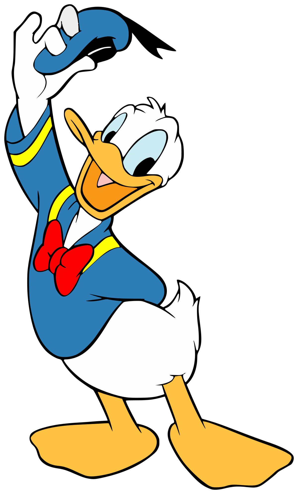
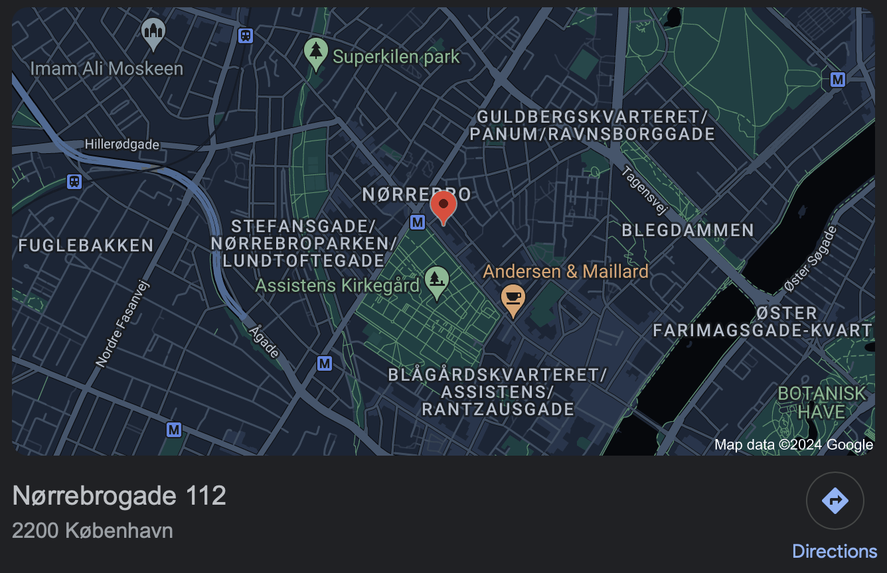

Micky Mouse |
Mickey Mouse, en af verdens mest elskede figurer, fungerer som direktør for organisationen "Stop Madspild". Med sin karismatiske og inspirerende ledelsesstil har Mickey forpligtet sig til at bekæmpe den globale udfordring med madspild. Under hans ledelse har organisationen iværksat innovative programmer og kampagner for at øge bevidstheden om vigtigheden af at reducere madspild og fremme bæredygtige spisevaner. Mickey's vision og engagement har inspireret mennesker over hele verden til at tage handling og gøre en positiv forskel i kampen mod madspild. |
|

Anders And | Anders And, en af de mest respekterede figurer i underholdningsverdenen, har påtaget sig rollen som direktør for organisationen "Stop Madspild". Med sin dybe forståelse for samfundsansvar og bæredygtighed har Anders And været en visionær leder i kampen mod madspild. Under hans ledelse har organisationen gennemført en række initiativer og projekter for at skabe bevidsthed om konsekvenserne af madspild og fremme løsninger til at tackle denne udfordring. Anders And's dedikation og passion for at gøre en positiv forskel har inspireret en hel generation til at handle og arbejde mod en verden med mindre madspild. |
Kontakt os endelig, hvis i har nogle forslag, ris & ros, hvis i ønsker at booke et foredrag med en af os ellers besøg os på vores kontor, og fortæl os hvad end der falder jeres grønne hjerter ind

Kontakt info: MickyMouse@stopmadspild.dk
AndersAnd@stopmadspild.dk
Telefon nr: 12345678